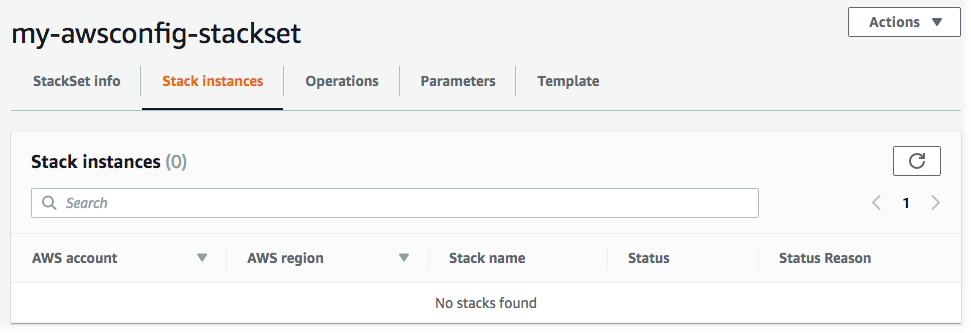

本文為英文版的機器翻譯版本，如內容有任何歧義或不一致之處，概以英文版為準。
從堆疊集刪除堆疊執行個體
您可以在 AWS Management Console或在 AWS CLI 中使用 AWS CloudFormation 命令以刪除堆疊執行個體。在此步驟中，我們將刪除所有堆疊。
對於具有服務受管許可的堆疊集，如果您從頂層組織單位 (OU) 刪除堆疊執行個體，則會將 OU 視為堆疊集的目標而移除。
使用 AWS Management Console 刪除堆疊執行個體
在以下網址開啟 AWS CloudFormation 主控台：https://console.aws.amazon.com/cloudformation
。 -
從導覽窗格選擇 StackSets。在 StackSets 頁面上，選取您在 建立堆疊集 中建立的堆疊集。
-
選取堆疊集後，從 Actions (動作) 選單選擇 Delete stacks from StackSet (從 StackSet 刪除堆疊)。
![從 [Actions (動作)] 選單中選擇 [Delete stacks from StackSet (從堆疊集刪除堆疊)]。](images/console-stacksets-action-delete-stacks.png)
-
在 Set deployment options (設定部署選項) 頁面上，選擇要從中刪除堆疊執行個體的帳戶。
-
[自我管理許可] 對於 Accounts (帳戶)，選擇 Deploy stacks in accounts (在帳戶中部署堆疊)。在文字方塊中貼上您的目標帳戶號碼，並以逗號分隔多個號碼。
[服務受管許可] 對於 Accounts (帳戶)，選擇 Deploy stacks in organizational units (在組織單位中部署堆疊)。貼上堆疊集的目標 OU 的 ID。
注意
StackSets 也會從指定目標 OU 的任何子 OU 中刪除堆疊執行個體。

-
針對 Deployment regions (部署區域)，選擇要從中刪除堆疊執行個體的區域。在本例中為美國東部 (維吉尼亞北部) 區域和美國西部 (奧勒岡) 區域。
-
針對 Deployment options (部署選項)：
-
針對 Maximum concurrent accounts (同時使用的帳戶上限)，保留 Number (數值) 和 1 的預設值。
-
針對 Failure tolerance (容錯能力)，保留預設值 Number (數字) 和 0。
在 Retain stacks (保留堆疊) 區域中保留停用的預設設定。
當您從堆疊集刪除堆疊時，Retain stacks (保留堆疊) 選項可讓您選擇從堆疊集移除堆疊執行個體，但儲存堆疊及其相關的資源。當您選擇 Retain stacks (保留堆疊) 選項，從堆疊集儲存堆疊時，該堆疊的資源將保持在其目前狀態，但該堆疊已不再是堆疊的一部分。若要重新關聯堆疊，或將現有堆疊新增至堆疊集，請參閱將堆疊匯入 AWS CloudFormation StackSets。
選擇 Next (下一步)。
-
-
-
在 Review (檢閱) 頁面上，檢閱您的選項，然後選擇 Submit (提交)。
-
刪除堆疊後，您可以在 StackSet 詳細資訊頁面的 Stack instances (堆疊執行個體) 標籤中，驗證是否已刪除堆疊集的堆疊執行個體。

使用 AWS CLI 刪除堆疊執行個體
當您身為委派管理員時，您必須在每次執行 StackSets 命令時將 --call-as 參數設定為 DELEGATED_ADMIN。
--call-asDELEGATED_ADMIN
-
執行
delete-stack-instances命令。對於--stack-set-name，指定堆疊集名稱my-awsconfig-stackset。藉由將
FailureToleranceCount參數中的0設定為MaxConcurrentCount，並將1設定為--operation-preferences，以設定容錯能力和最大並行帳戶，如以下範例所示。若要改為套用百分比，請使用FailureTolerancePercentage或MaxConcurrentPercentage。為了此逐步解說之目的，我們將使用計數而非百分比。注意
MaxConcurrentCount的值取決於FailureToleranceCount的值。MaxConcurrentCount最多比FailureToleranceCount多 1。由於
--retain-stacks為delete-stack-instances的必要參數，如果您不想保留 (儲存) 堆疊，請新增--no-retain-stacks。在此演練中，我們將新增--no-retain-stacks參數，因為我們不會保留任何堆疊。[自我管理許可] 以您在建立堆疊集中用來建立堆疊的帳戶取代
account_ID。aws cloudformation delete-stack-instances --stack-set-name my-awsconfig-stackset --accounts '["0123456789012"]' --regions '["eu-west-1"]' --operation-preferences FailureToleranceCount=0,MaxConcurrentCount=1 --no-retain-stacks[服務受管許可] 對於
--deployment-targets，指定您要在其中建立堆疊執行個體的組織 (根) ID 或 OU ID。注意
StackSets 也會從指定目標 OU 的任何子 OU 中刪除堆疊執行個體。
aws cloudformation delete-stack-instances --stack-set-name my-awsconfig-stackset --deployment-targets OrganizationalUnitIds='["ou-rcuk-1x5jlwo", "ou-rcuk-slr5lh0a"]' --regions '["eu-west-1"]' --no-retain-stacks -
在堆疊刪除完成之後，選擇性地執行
describe-stack-set-operation命令來顯示刪除堆疊操作的狀態和結果，以確認堆疊執行個體已從您的堆疊集刪除。針對--operation-id，使用您的delete-stack-instances命令所傳回的操作 ID。aws cloudformation describe-stack-set-operation --stack-set-namestackSetName--operation-idddf16f54-ad62-4d9b-b0ab-3ed8e9example